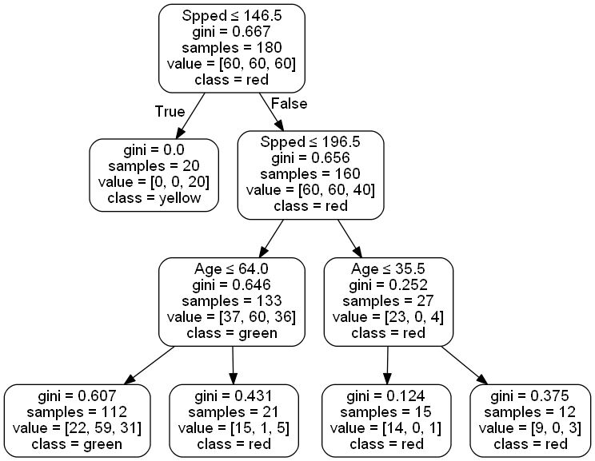

- Notebook auf machen in Azure nur falls ich was zeigen muss. - Auch alle anderen Links auf - TS Playground Übung selbst machen - Toolbox ausprobieren und Übung selbst machen - Add Star Treck Background Noise: https://youtu.be/ZPoqNeR3_UA - Use Hourglass to show remaining time
Introduction to Machine Learning for Beginners
Oliver Zeigermann / @DJCordhose
Generell:
- Material aus CNN Notebooks in Slides kopieren
- Notebooks immer nur wenig Text, wie bei Booster
- Gradient Descent:
- https://towardsdatascience.com/improving-vanilla-gradient-descent-f9d91031ab1d
- Model Builder Übung wieder mit hinein nehmen
Basic:
- Vielleicht doch vorher KNN, weil einfacher zu verstehen?
- DT als erstes?
- Bisschen Theorie und so ausm Buch klauen für Folien
- gini Faktor und wie gelernt wird
- motiviert durch den geplotteten DT
- Übung: Overfitting verhindern und dabei Underfitting vermeiden
- Lernerfolg: beides geht nicht, man muss sweet spot suchen
Dt als Übung für unten das kann man leichter einzeichnen. Also auch zuerst DT einführen. Dann knn.
- Decision Trees passen sehr gut auf manuelle Verarbeitung
- Manuelle Lösung als Decision Tree aufzeichnen
- auch als 2. Übung, einzeichnen von den Decsion Break Points
Uni:
- Intro ML
- wie Vormittag MD Dev days
Questions and Discussion welcome at any time!
Getting to know each other
Introduce yourself to your neighbor(s) and talk about
- What interests you with Machine Learning?
- Are you already doing Machine Learning or do you plan to do so? What for?
5 Minutes
Structure
- First half of the day: the basics of machine learning
- Second half of the day
- Neural Networks
- Deep Learning
- Applications of Machine Learning
Part 1 - The Basics
How does Machine Learning work?
Customer Data - Car Insurance

How would you rank me (47) for a car with 160 km/h top speed?
How do you create a general prediction?
Classic Approach: Code Rules by hand
if age < 25:
if speed > 180:
return red
else:
return yellow
if age > 75:
return red
if km_per_year > 50:
return red
if km_per_year > 35:
return yellow
return green
No great results
Do we have all the rules? Are they even correct?

approx. 43% correct predictions (guessing would be 33%)
Programming Exercise #1
Maximize score starting from existing code
- change rules?
- add some?
- remove some?
Do your work in on Jupyter Notebook 1-classic-code
Different Approach: Machine Learning

Typical application: Classification

Paper Exercise #1 - Understanding the Supervised Learning Approach
Manually cluster areas of different customer types on the upper part of the handout
- dark (green): good customer
- light (yellow): mediocre customers
- middle (red): red customers
Make sure you draw with pressure
Plot Twist
Generalisation, not perfect reproduction is the objective
- We split existing data into two sets
- The larger set (60 or 80%) we use to build our model
- The smaller set we use to validate the model
Exercise #1, Part2 - How well did you generalize?
Turn the page and redraw the lines you printed through from the first page
What do you think, is this result worse?
What would you have done differently if you had been given this information before (that it is all about generalisation)?
Sample Solution: Fine

Train

Test
Not ideal, especially in the middle where everything mixes
Sample Solution: Coarse

Train

Test
Not so bad - we humans are good at clustering in 2-d
Machine Learning and AI
Why I like the term artificial intelligence: I think it's good to have an umbrella term for the field that encompasses a range of techniques – ML, knowledge rep, planning, heuristic search, goal formation, behavior modeling, etc. – and it's the one we have.


There are differen types of machine learning

Machine Learning as an Experiment

Supervised Machine Learning
- What we just did
- Train a system using known data
- There are different strategies to train a system
- For our problem a simple strategy will do
Decision Trees
A simple classic
Supply my hand drawn decision tree
Paper Exercise #2
- Experiment with the teachable machine to understand supervised learning
- Create a decision tree for our problem by hand and draw it on paper
- Manually apply the decision tree to our problem in the lower part of our sample sheet
- How does the result look like?
- Does it remind you of anything?
The computer is actually better at doing repetative work
Explain what we see here, then samples for full depth for overfitting, then underfitting for depth=3 and sweet spot for depth =6
KNN: k Nearest Neighbors
Another simple classic

Algorithm
For a case to predict
- Plot the case together with the known samples
- Look at a number (k) of nearest data points
- Choose k in such a way that you can get a majority
- Your prediction is the color of the majority
Programming Exercise #2
- Can you do better than the hand coded classifier?
- Which number of neighbors gives the best results?
- How do you explain the different results for training and test data?
- What is the value you should optimize for?
- How do the different results look like? Do you see a pattern?
Do your work in on Jupyter Notebook 3-sklearn-knn
Computed results for k = 1
approx. 98% accuracy on train data, but only 65% on test data
This is what we call Overfitting
Computed results for k = 13

only approx. 81% accuracy on train data, but also 75% on test data
Notice the smooth boundaries
Part 2 - Hipster Stuff
Neural Networks and Deep Learning
How does an artificial neuron work?

Artificial neuron to neural networks

Softmax: Categories with likelyhoods

Tensorflow Playground
Understanding the Basics of Neural Networks

Exercise #3
Make some sense of artificial neurons and neural networks using the TensorFlow Playground
- What can you do with a single neuron and why?
- Configure a minimal network to deliver a good result on the initial data set
- Play with the learning rate - can you change the learning rate in such a way the network no longer trains properly?
Applying Deep Neural Networks to our problem
Using TensorFlow and Keras
inputs = Input(name='input', shape=(3, ))
x = Dense(100, name='hidden1', activation='relu')(inputs)
x = Dense(100, name='hidden2', activation='relu')(x)
predictions = Dense(3, name='softmax', activation='softmax')(x)
model = Model(input=inputs, output=predictions)
model.compile(optimizer='adam',
loss='categorical_crossentropy',
metrics=['accuracy'])
model.fit(X_train, y_train_categorical, epochs=1000)
What does the neural network learn?
All the weights of a the neurons
model.summary()
_________________________________________________________________
Layer (type) Output Shape Param #
=================================================================
input (InputLayer) (None, 3) 0
_________________________________________________________________
hidden1 (Dense) (None, 100) 400
_________________________________________________________________
hidden2 (Dense) (None, 100) 10100
_________________________________________________________________
softmax (Dense) (None, 3) 303
=================================================================
Total params: 10,803
Trainable params: 10,803
Non-trainable params: 0
_________________________________________________________________
How does a Neural Network Learn?
(Stochastic) Gradient Descent (SGD)
Minimizing the error by changing the trainable parameters
For just 2 parameters you can image a scenary with hills and you try to find the deepest valley

http://www.benfrederickson.com/numerical-optimization/
A too high learning rate might miss the mimimum, a too low one might be slow
Programming Exercise #3
Configure a deep neural network to solve our problem
- Use all available input features (3)
- Change the configured number of neurons per layer
- Change the number of layers
- Can you explain the number of trainable parameters?
- How do you explain the very different decision boundaries per km per year?
Do your work in 4-keras-tensorflow-nn
Best known results

only approx. 79% accuracy on train data, but also 77% on test data
Boundaries even more smooth
Part 3 - Let the GPU burn
Convolutional neural networks
Not bad, but: Neural Networks are best for non symbolic data
Like classifying images
There are a number of specialized neural network layers
Use of GPU for non symbolic data

https://twitter.com/chrisalbon/status/907028933693947904?s=03
Why the recent break throughs?

Cray X-MP
Supercomputer (1982)
Titan 5 im Gamer PC (2017)
... but we also have
- Smarter Learning Strategies (more hidden layers = Deep Learning)
- Big Data
Unfortunately...
For all real problems you will need very powerful GPUs
And even then you might have to wait several minutes, hours, days, or even weeks for the result of a single training run
To make matters worse: TensorFlow only supports NVIDIA GPUs and installation of drivers is no fun
We restrict ourselves to basic examples on the web that work with any GPU
- Add material for Convolutional NNs from speed limit Notebook
MNIST - Using a model already trained
Exploring the different types layers together

How do Convolutions work - Image Kernels
You might know from Photoshop etc., used in Convolutional Neural Networks

http://setosa.io/ev/image-kernels/
There are many more interactive explanations here:
http://setosa.io/ev
Training a network

Part 4
Applications
Face Detection

What also works in that area
- Image moderation (what is in that picture)
- Facial analysis
- Celebrity recognition
Only two of these images are actual images

https://twitter.com/goodfellow_ian/status/918900712901197824
All others generated by neural networks

Minimal information sufficient for value prop

Getting rid of marketing people
Zalando is getting rid of 250 marketing people at head quarter in Berlin. Marketing will be data and AI based.
https://corporate.zalando.com/en/newsroom/en/stories/our-customers-evolve-so-do-we
More applications include
- Medicine: Many AI System are at the same level as human doctors (e.g. skin cancer screening)
- Recommendation Systems: Spotify and Netflix know me better than I do
- Making decisions: Should you be granted private health insurance or a loan
- Fraud Detection: AI can detect Credit Card Scams and other suspicious activities (tax declarations)
- Predictive Maintenance: AI systems tell you when to repair something before it is breaks
- Desaster Recovery - How does a flooded Road look like?: https://blog.insightdatascience.com/deep-learning-for-disaster-recovery-45c8cd174d7a?imm_mid=0fbcdf
- Do People in a Movie Theatre Laugh?: https://gizmodo.com/disney-is-building-facial-recognition-to-figure-out-whe-1797267294?imm_mid=0fbcdf&cmp=em-data-na-na-newsltr_ai_20180305
Exercise #4: How to apply Machine Learning to your data
Machine Learning is the engine, but your data is the fuel
Again, discuss with your neighbor(s) - do you know a problem or data you could tackle with Machine Learning or more generally AI
Revisiting inital discussion with your neighbors
Would you mind sharing your ideas with the
-
Wrapup
- Machine Learning can be a powerful addition to traditional programming
- Objective is to generalize
- Often not even a deep Understanding of the domain is required
- Neural Networks and Deep Learning are especially powerful on the sub symbolic level
Ping me for questions / help / comments: @DJCordhose